CJ Osborne - Portfolio
Software Engineer / Graphics / Physics
DigiPen Institute of Technology · Expected May 2026
Phone: 303-210-9656
email: cj.l.osborne@gmail.com
Seattle (willing to relocate)
Detail-oriented Computer Science student with a strong foundation in C++ systems programming and tool development. Seeking an entry-level Software Engineering role to apply experience in full-stack internal tools, automation, and data analysis to support high-performance hardware validation.
The Engine
Custom C++ engine spanning rendering, audio, and simulation: multiple backends (OpenGL, DirectX 11, Vulkan), GLSL/HLSL shaders, FMOD integration, and in-house physics (AABB, raycasts, particles). The clips below are experiments on that stack—spatial structures, clustering, fluids, granular media, and small tools—each with a dedicated panel underneath for APIs, algorithms, and code you want to call out.
Rendering covers shader work and real-time techniques; simulation covers collision, integration, and debug draws.
 2D partition
2D partition
This scene runs three 2D partition backends behind one UI toggle: Quadtree, AABB tree, and KD-tree. The moving sprites are updated first, then the active structure is rebuilt from current positions so the debug lines always match live data.
In the clip you are seeing that live rebuild behavior: as entities move and bounce, partition cells/splits update continuously (driven by the scene update loop and sim speed controls, plus faster clustering timers in fast mode).
Big-O: full rebuild each update is typically O(n log n) for balanced trees (worst O(n²) if degenerate input); point/range query is usually near O(log n + k) with k results, and can degrade toward O(n) in worst cases.
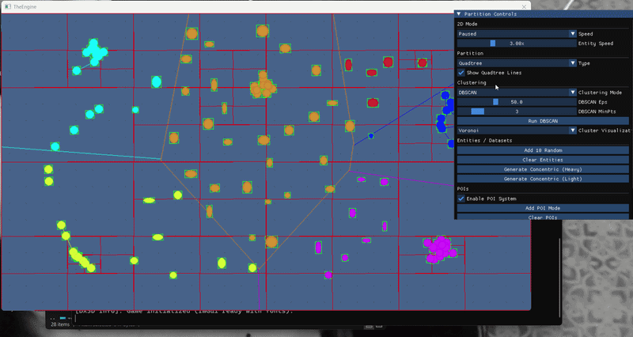
DBSCANDBSCAN here uses classic density expansion (core / border / noise) with a BFS-style cluster grow. Parameters come from the panel: eps and minPts, and clusters are recolored every recompute.
Important implementation detail: current neighbor lookup is a direct scan of active entities (distance check against every point), so neighborhood discovery is O(n) per point and clustering is O(n²) in practice. The quadtree/KD/AABB structures are still updated and rendered in parallel for partition visualization and for other scene queries.
DBSCAN updates are throttled for stability/perf (~0.1s normal, ~0.05s fast mode), which is why the cluster view can lag slightly behind raw entity motion.
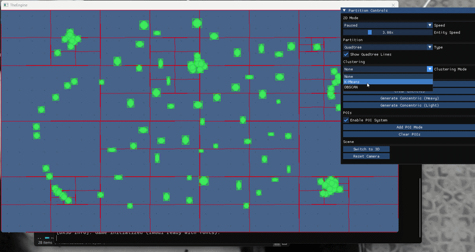
K-meansK-means runs Lloyd iterations (assign to nearest centroid, then recenter). You can drive K, run manually, and toggle fast mode in the same panel used in the GIF capture.
This implementation uses the quadtree as a spatial helper during assignment/centroid updates (querying nearby entities around dynamic search radii), then falls back to direct centroid checks when needed. So it is partition-assisted rather than a pure brute-force pass.
Big-O: baseline Lloyd is O(i * n * k). With the quadtree helper, practical constants drop on clustered data, but worst-case still trends toward the same bound (or worse if local membership checks become dense).
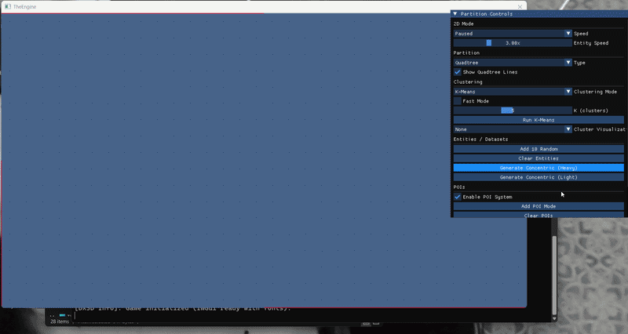
Concentric circlesThese are generated concentric-ring datasets from the scene tools (heavy and light presets) and then clustered with K-means or DBSCAN.
It is a good stress test: K-means pushes toward centroid blobs, while DBSCAN tracks density-connected ring segments when eps/minPts are tuned for the spacing and noise level.
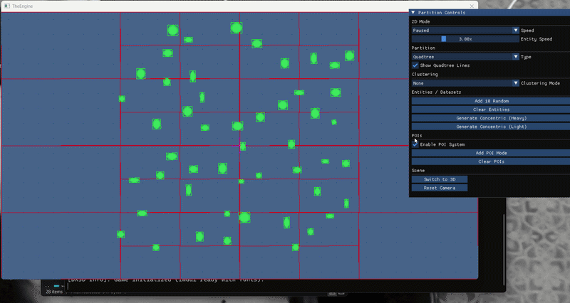
TreesThis GIF is the side-by-side tree comparison view: quadtree cells, AABB boxes, and KD split regions (with optional split-line rendering).
Big-O summary: balanced build around O(n log n), typical query around O(log n + k), worst-case O(n) when partitions become unbalanced. Use this clip for structure comparison, and the 2D partition clip for the dynamic “rebuild while moving” behavior.
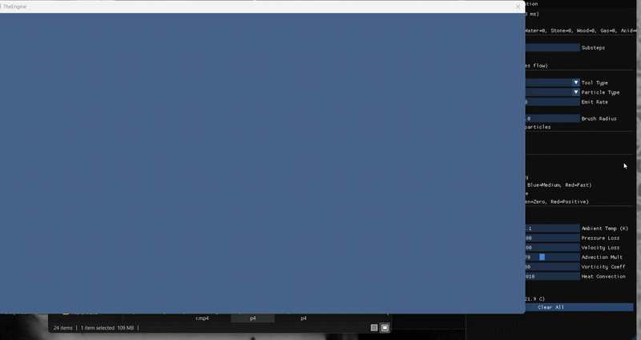
Falling sandI’ve always liked falling-sand games, so I built one in-engine as a cellular-automata sandbox with a fixed grid, per-cell materials, and immediate brush tools.
The scene runs a double-buffer update (grid -> gridNext) with configurable substeps and an alternating traversal mode to improve flow stability. Baseline cost is linear in grid size per pass: roughly O(W*H).
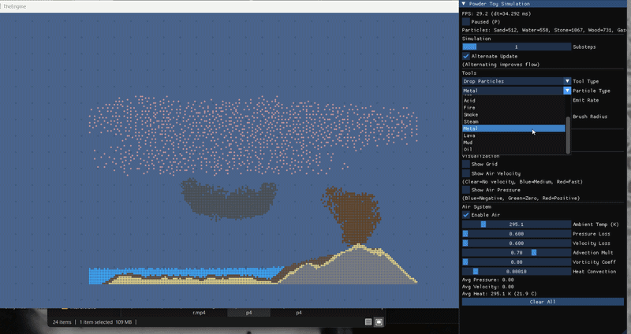
Sand chaos“Chaos” comes from explicit cross-material rules: sand + water -> mud, fire dries mud -> sand, water + lava -> steam + stone, lava melts stone/metal, acid corrodes neighbors, and flammables (wood/oil/gas) ignite with lifetime-driven burnout.
Motion itself is state-based (powder/liquid/gas/solid) with density swaps, random lateral flow for liquids, gas repulsion, and air-force bias. Even though each rule is local, the coupled updates create large emergent structures.
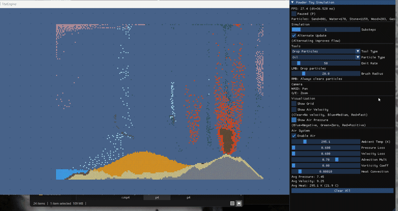
Air pressureAir pressure is solved on the same simulation grid using divergence/gradient passes plus advection (kernel smoothing + bilinear sample + wall/path checks). Solids are encoded in block maps so walls zero nearby velocity and constrain flow.
Complexity: pressure update is linear per pass, about O(W*H) each substep, with several full-grid passes in sequence. Effective frame cost is O(substeps * W * H).
Optimizations/stability controls in code: double-buffer swaps, edge damping + hard boundary clamps, magnitude-based loss (weak pressure decays faster), blocked-cell skips, and impulse throttling in the tool path.
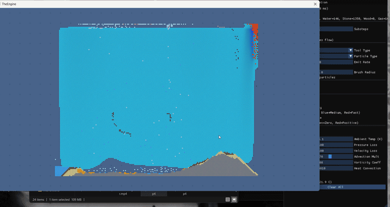
Air velocityAir velocity is coupled to pressure and heat: pressure gradients drive flow, hot regions add buoyant upward motion (convection), optional vorticity confinement adds swirl, and particle motion injects local momentum/pressure back into the air fields.
Complexity: velocity + convection remains full-grid linear per pass (O(W*H)), so with substeps it scales as O(substeps * W * H).
Optimizations/stability: clamped magnitudes, adaptive-like loss on weak velocities, edge damping, blocked-air masks, and double buffering to keep the simulation stable while preserving responsive impulses and draft effects from fire.
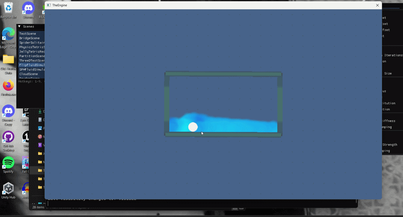
FLIP ballCore FLIP pass in this scene: particles -> MAC grid scatter, divergence build, Jacobi pressure solve, pressure-gradient projection, viscosity/damping, then grid -> particles with the UI blend slider controlling PIC/FLIP behavior.
This clip also shows the interactive rigid ball coupled to the fluid (spring-to-mouse and buoyancy), so particles are constrained against both box boundaries and the moving collider.
For visuals, FLIP uses a metaball-inspired method: each particle draws with MetaballFalloff.png under additive blending, then threshold/smoothing controls shape the final fluid silhouette. I also prototyped a shader path in Metaball.hlsl and MetaballCompute.hlsl for explicit field accumulation + surface extraction.
Complexity per substep: transfers are ~O(P), pressure/projection/viscosity are ~O(G * I) with I Jacobi iterations, then advection/boundary are ~O(P). Total frame cost scales as O(substeps * (P + G*I)) before collision passes.
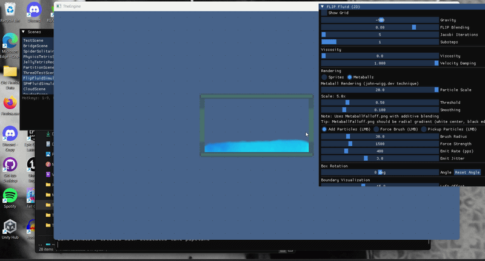
FLIP particlesSame FLIP solver, but focused on live particle injection via brush/emit-rate controls and optional force brush interaction. New particles are spawned into the same pressure-constrained flow each fixed step.
Scaling: adding particles raises transfer, advection, coloring, and collision work approximately linearly in P. The grid-side solve remains O(G * I), so tuning particle count vs. Jacobi iterations controls quality/performance tradeoff.
Optimization path in code: collision can run naive pairwise (O(P²)) or use a spatial hash neighbor pass (~near-linear for typical distributions), with collision iterations exposed in UI.
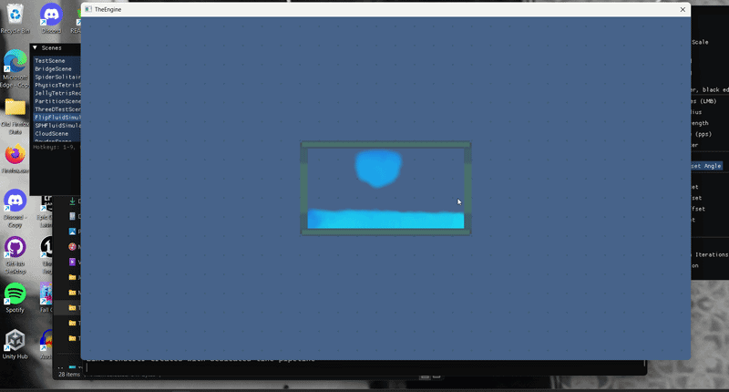
FLIP rotateThis run highlights the rotating box and particle pickup tools: container angle is changed in real time, and particles can be grabbed/moved while the solver continues to enforce boundary collisions in box-local space.
The boundary sprites are visualized with adjustable offsets, while particle confinement uses the rotated domain math each step, so the fluid remains stable as the container orientation changes.
Complexity: same FLIP backbone (O(substeps * (P + G*I))) plus boundary/collision handling on particles; hashed collisions keep interaction-heavy moments tractable compared to pure O(P²).
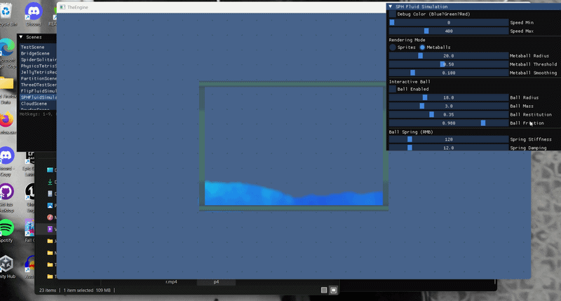
SPH ballSPH here is particle-only (LiquidFun-inspired): spatial-grid neighbors, kernel-based density/pressure, pressure+viscosity forces, integration, boundaries, then optional contact sleeping/position constraints and XSPH smoothing for stability.
Big-O: naive SPH neighbor search is O(n²), but this scene uses a spatial grid so neighbor gathering is near-linear for typical distributions (roughly O(n * k), small local k). Collisions are similarly accelerated by hashed buckets.
Graphics uses the same metaball-inspired method as FLIP: additive draws of MetaballFalloff.png per particle, with UI controls for metaball radius/threshold/smoothing; velocity tinting still drives the fluid color.
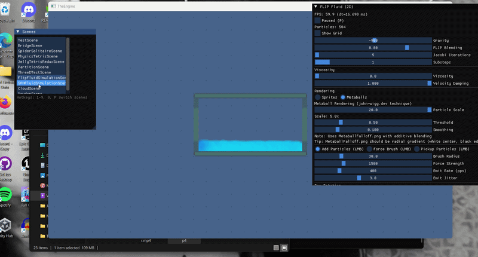
SPH startEarly-state SPH dam test: neighbor lists are rebuilt from the spatial grid each step, then reused across density/pressure/force passes for coherence and less repeated lookup work.
In practice, tuning smoothing radius and grid cell scale is the core tradeoff: larger support stabilizes density estimates but raises neighbor count; smaller support is faster but can increase noise/compressibility artifacts.
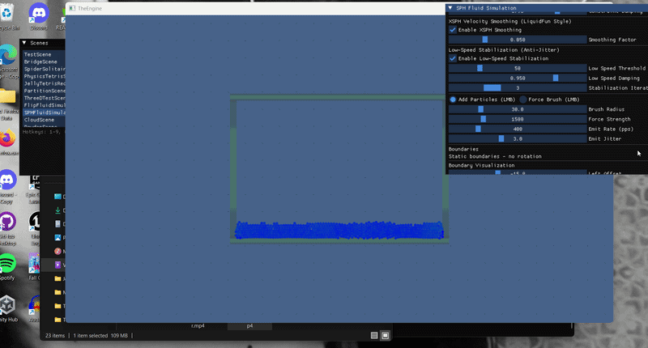
SPH debugDebug view focuses on performance/stability telemetry: neighbor checks, density calculations, average neighbors, and current grid dimensions, plus toggles for optimized SoA layout, island simulation, contact sleeping, XSPH smoothing, and low-speed stabilization.
On the graphics side, this view is where I iterate the metaball-inspired look against physically-driven velocity colors, so solver tuning and visual tuning stay coupled.
 Spider solitaire
Spider solitaire
Spider Solitaire turned into a surprisingly deep systems project: strict sequence validation (same-suit descending runs), stack-aware drag/drop, auto-flip of newly exposed cards, stock dealing, completed-run detection (K->A), and foundation transfer.
The undo pipeline is a full state snapshot system (tableau/foundation/stock plus per-card face-up state), with special handling to avoid immediate re-removal of restored sequences on the next frame. This made complex move chains and recovery from misdrops feel reliable.
I also mixed in lightweight card physics and tooling: spring-based settling on deal/drop, magnetic attraction toward valid targets, optional jitter test/debug overlays, and a win celebration mode that throws cards with gravity + spin while preserving game-state integrity.
Barton
3D puzzle game where the player collaborates with a genAI-powered sidekick via conversation to solve environmental puzzles. Implemented tools for an interaction system. Collaboration of 20 developers (artists, designers, sound) for cohesive gameplay. Featured in LVLUP Expo 2025.
Specter Inspector
Puzzle game set within desktop windows that players drag and interact with to navigate the world. Served as systems/physics engineer: complex physics with AABB calculations, point-line collision detection, custom particle system, FMOD audio.
 Debug boxes
Debug boxes
 Getting hurt
Getting hurt
 Using battery
Using battery
AtlasNet
Server meshing API for MMOs and large-scale continuous worlds with dynamic server partitioning. Assisted with networking back-end, partitioning heuristics, and a visual debugging tool for server partitioning and entity management. Web-based dashboard for real-time monitoring. Small team of 4; exploring ML heuristics for partitioning.
- cj.l.osborne@gmail.com
- 303-210-9656
- Seattle, WA (Willing to Relocate)